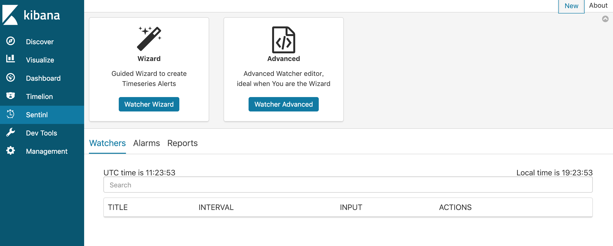
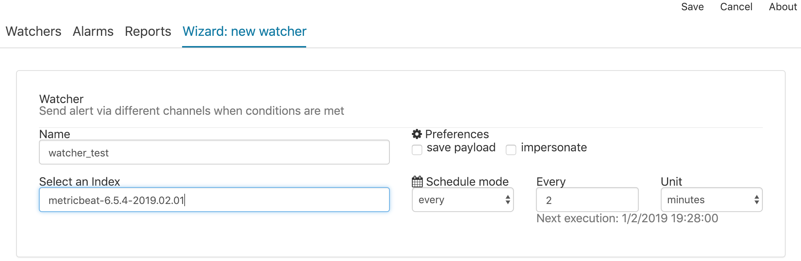
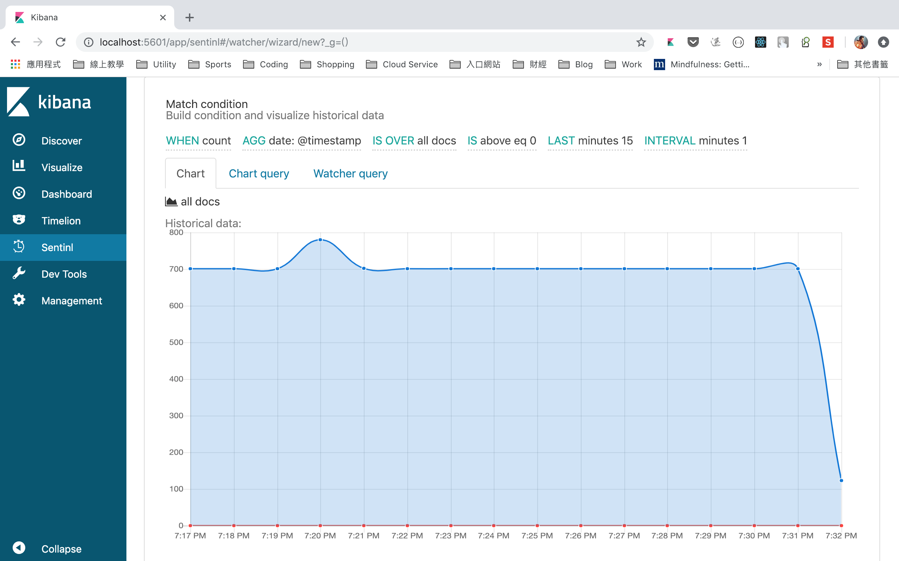
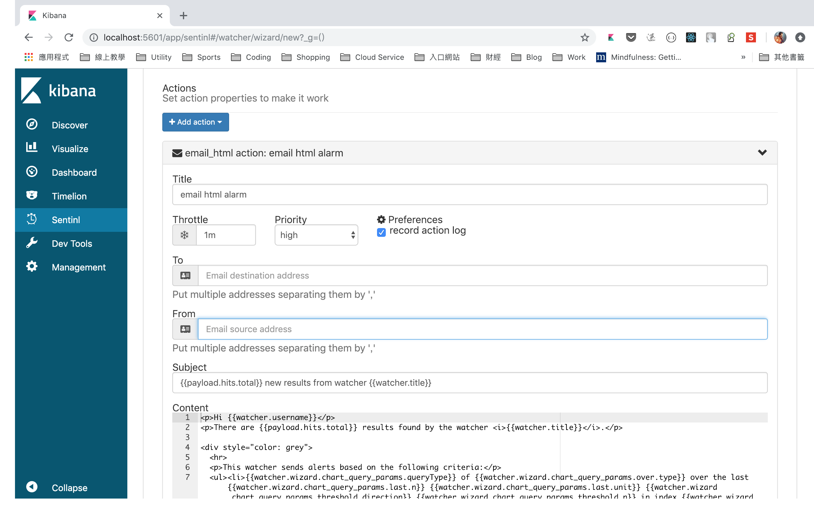
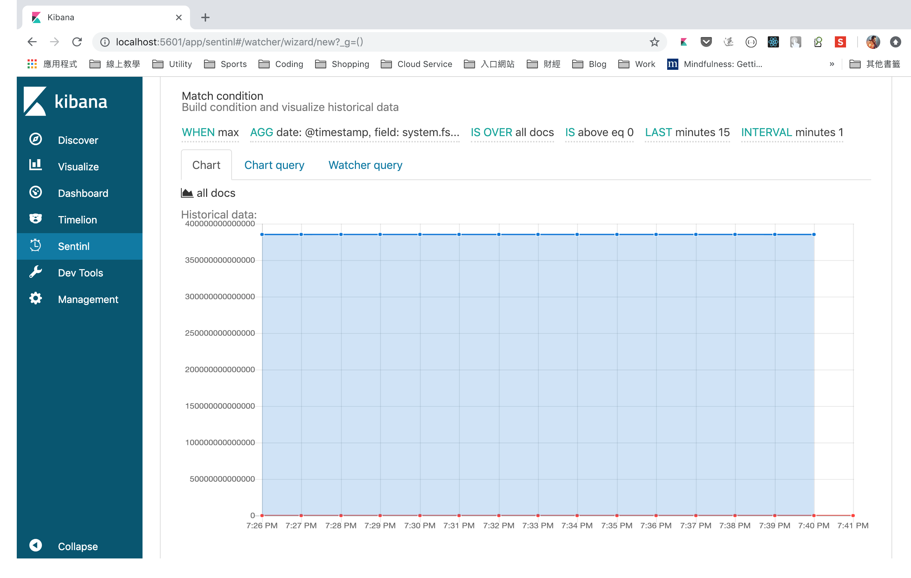
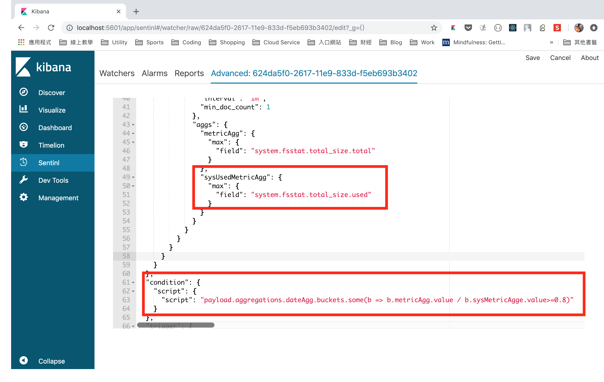

上一篇提到如何安裝ELK和Metricbeat收集DB的log，接下來介紹如何在Kibana設定watcher讓系統有問題時自動通知管理者。
設定Watcher
進入SENTINL的頁面，在右上角點選New新增watcher

使用watcher wizard設定watcher的名稱和使用的index

設定完可以看到下方出現折線圖

可以針對內建指標做監控並設定觸發條件。
接下來是設定通知的動作，這裡以email為例，可設定寄件人(也就是在kibana.yml設定的user email)和收件人及訊息內容

設定特殊條件的Watcher
當你要監控的指標需要自行計算時(如磯碟己用空間的百分比，該數值在dashboard是由磁碟空間和己用空間計算出來)便需要自行修改query語法
我們使用wizard新增watcher，WHEN選擇max，此時可看到AGG多了一個field，選擇system.ffstat.total_size.total

點選Watcher Query，然後conver to advanced，開始修改query條件。此時畫面會回到watcher清單，再點選剛才建立的watcher，會發現看到類似DSL語法的畫面
在metricAgg下可看到剛才設定的system.ffstat.total_size.total。我們新增一項指標並修改condition的script在磁碟空間己用80%時發通知

修改後別忘了儲存，可以回到watcher清單列表，在Alarms可以看到通知有無正確的發出。
這個機制可用在其它後端服務上，對於管理機器是個方便的工具。